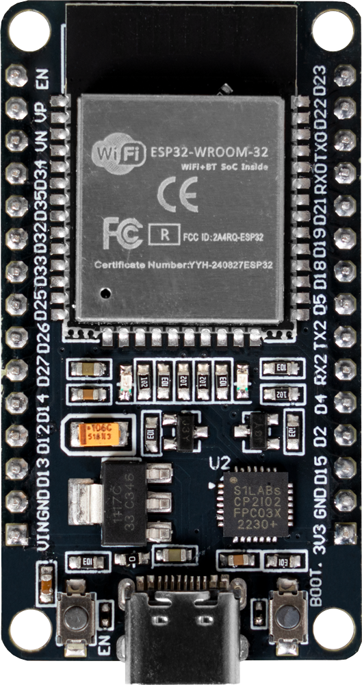
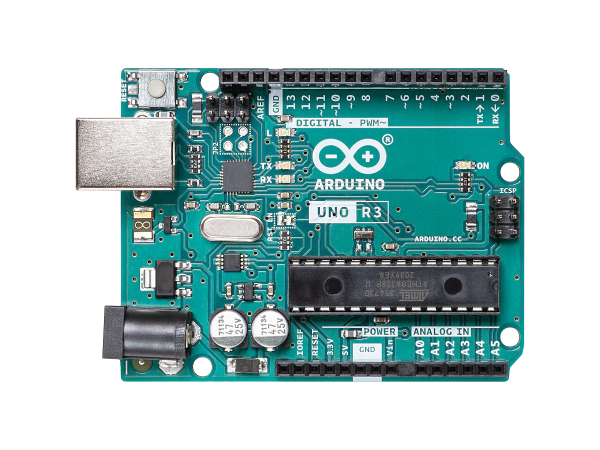

Why ESP32
"A feature-rich MCU with integrated Wi-Fi and Bluetooth connectivity for a wide-range of applications."
Main features
- Connectivity: 2.4 GHz Wi-Fi (802.11 b/g/n) and Bluetooth Classic/BLE.
- Speed: Dual-core Xtensa CPU up to 240 MHz.
- GPIO: Dozens of pins for digital I/O, PWM, I2C, SPI, UART, and more.
- Analog: Multiple ADC channels and a few DAC outputs depending on the board.
- Low power: Deep sleep modes for battery projects.
- Extras: Touch sensors, pulse counters, RTC, watch-dog timers.
ESP32 vs Arduino Uno (typical)
| Feature | ESP32 (WROOM-32 class) | Arduino Uno R3 |
|---|---|---|
|  |  | |
| CPU | Dual-core Xtensa | ATmega328P |
| Clock speed | Up to 240 MHz | 16 MHz |
| RAM (SRAM) | ~520 KB | 2 KB |
| Flash | 4 MB typical | 32 KB program |
| Wi-Fi | Yes (802.11 b/g/n) | No |
| Bluetooth | Yes (Classic + BLE) | No |
| Operating voltage | 3.3 V logic | 5 V logic |
| 5V tolerant pins | No | Yes |
| ADC channels | 12-bit, many channels | 10-bit, 6 channels |